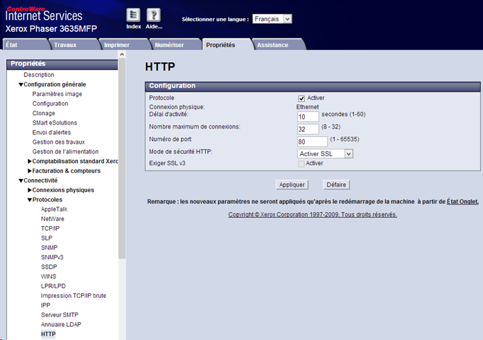
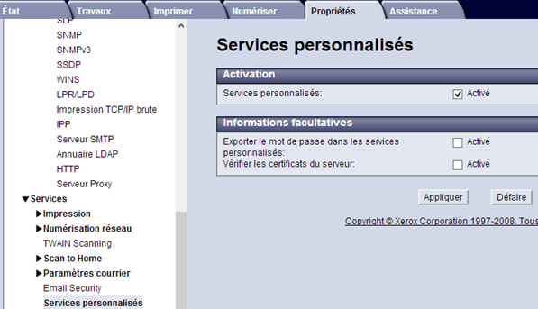
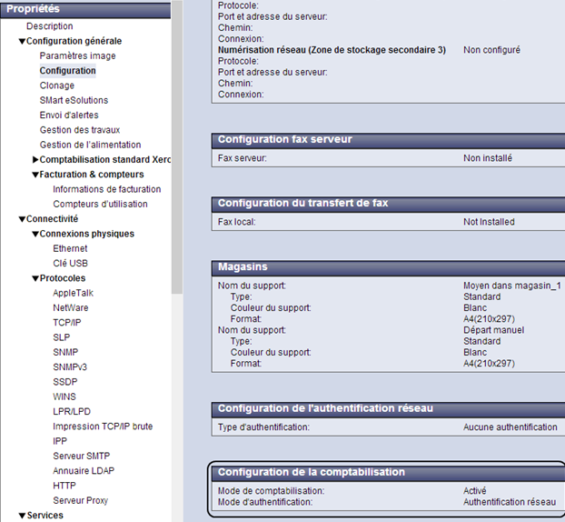

WES Xerox - Configurer les périphériques
Configurer les ports
Les ports réseau à ouvrir pour permettre le fonctionnement des WES sont les suivants :
| Source | Port | Protocole | Cible |
| Service Watchdoc comptabilisation (jba) pour l'authentification, port sécurisée obligatoire |
TCP 80 |
HTTP
|
Périphérique d'impression |
Modèles Phaser
Configurer le modèle Phaser 3635MFP
Ce modèle ne possédant pas de service web permettant une configuration automatique, il est nécessaire de le configurer manuellement.
-
Depuis l'interface web d'administration du périphérique, rendez-vous sous l'onglet Propriétés > Connectivité > Protocoles > HTTP ;
-
dans la section HTTP, sélectionnez Activer SSL en mode de sécurité HTTP :

Activer les services personnalisés
-
Depuis l'interface web d'administration du périphérique, rendez-vous sous l'onglet Propriétés > Services > Paramètres courrier > Services personnalisés
-
dans la section Services personnalisés, cochez la case Activés
-
cliquez sur le bouton Appliquer pour valider le paramétrage :

Kit de comptabilisation réseau du modèle Phaser 3635MFP
Livré sous forme de carte à insérer dans le périphérique, ce kit est une option payante sur ce modèle. Son activation s’effectue depuis l’écran du périphérique à l'aide d'une documentation fournie avec le kit.
Pour vérifier si la comptabilisation réseau est activée, via le site web du périphérique :
-
depuis l'interface web d'administration du périphérique, rendez-vous sous l'onglet Propriétés > Configuration générale > Configuration :
-
dans la section Configuration de la comptabilisation, vérifier que le mode d'authentification est activé.

Installer le lecteur de badge
Extrait du manuel d'installation Xerox :
-
connectez vous sur le périphérique en administrateur ;
-
cliquez sur le bouton Statut du périphérique ;
-
sélectionnez l’onglet Outils > Interface utilisateur > Général > FSO
-
sélectionnez SFO 35 puis cliquez sur le bouton Activer ;
-
SFO 35 doit indiquer YES.
-
Enregistrez le paramétrage.